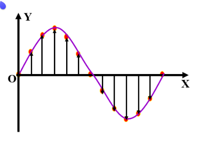

物理机械振动
机械振动
将小球放在弹簧一端，固定弹簧另一端，这样的系统叫做弹簧振子。
将小球向右拉，随后放开，它就左右运动起来。小球原先静止的位置叫做平衡位置，小球在平衡位置附近的往复运动，是一种机械振动，简称振动。
简谐振动
简谐振动是最简单最基本的机械振动。
当物体所受合力始终指向平衡位置，且大小与物体相对平衡位置的位移 成正比时，物体做简谐振动。
简谐振动中，物体相对平衡位置的位移 与时间 的图像，遵从正弦函数规律，也就是：
我们可以尝试证明一下。
可以发现，此时 与 成正比， ，.
上述推导过程反过来也是成立的。
单位圆
在高中范围内，还有一种单位圆的方法，通过将直线上的运动映射到单位圆上，以研究简谐振动的性质。
对于一个在单位圆上做匀速圆周运动的物体，其在 轴上的投影关于原点 做简谐振动。
设单位圆上运动的点为 ，其在坐标轴上的投影为 ，我们很容易得到二者之间的关联。
，.
由匀速圆周运动性质，我们很容易得到 点所受合力：.
合力沿水平方向的分力 .
对于 点，我们有：，.
这与我们上面的推导是一致的。
至此，我们就说明了，简谐运动可以看作单位圆上匀速圆周运动在水平方向上的投影。
在后面讲相位时，还会再次提到单位圆。
物理量
一般来说，我们取 ，那么 ，其中 为振幅， 为角频率。
-
振幅 ：振动物体离开平衡位置的最大距离。
-
全振动：在间歇运动中，振子第一次向右经过某点 ，当它下一次再以相同速度经过点 时，振子完成一次全振动。
-
周期 ：完成一次全振动所需的时间。
-
频率 ：单位时间内完成全振动的次数，.
-
振子刚度 ，，由系统的力学性质决定的常量。.
-
角频率 ，由正弦函数的性质，，代表该振动在单位圆上的角速度。
特别地，角频率是由系统的力学性质决定的，对于给定的弹簧振子，角频率仅与自身的刚度和质量有关，有：
计算周期，我们可以用整圆 除以单位圆上的角速度 得到：
常见的简谐运动
弹簧振子模型是最经典的简谐运动。
固定弹簧一端，弹簧另一端连接小球，将小球拉开一段距离，松手，小球以原先的静止位置为平衡位置，做简谐运动。
在实际摆中，如果细线质量极小，线的长度极大，摆动角度极小，我们将这样的装置叫做单摆，它是实际摆的理想化模型。
在单摆中，因为角度极小，我们近似地将小球的水平位移与小球经过的弧长等效。
单摆的回复力可以写为：，也就是说，.
单摆的圆频率 ，周期 .
有趣的是，单摆的周期仅与绳长有关，绳子越长，周期越大。
振动能量
以弹簧振子为例，在振动中任意时刻 ，速度和位移分别满足：
振子的动能 ，弹簧的弹性势能 可以分别计算：
不难发现，.
在振动过程中，系统机械能守恒，总能量只与角频率和振幅有关。
阻尼振动
简谐振动是理想化的模型，如果在振动过程中，振子总是受到阻力，那么系统机械能逐渐减小，振幅也逐渐减小，直到最终停止。
振幅逐渐减小的振动叫阻尼振动，虽然振幅减小，但振动周期不变。
振幅保持不变的振动叫无阻尼振动。
受迫振动
振动物体如果在周期性外力——策动力作用下振动，那么它做受迫振动。
受迫振动稳定时，振动周期和频率等于策动力的周期和频率，而与振动物体的固有周期或频率无关。
虽然受迫振动的周期和频率与振动物体的固有周期、频率无关，但受迫振动的振幅与策动力的周期与物体的固有周期有关。
策动力周期与物体固有周期相差越小，受迫振动的振幅越大，当二者相等时，受迫振动的振幅最大，叫做共振。
当策动力跟振动“合拍”时，每次驱动力都与物体速度方向一致，驱动力总是做正功，所以振幅越来越大。当不“合拍”时，一部分做正功，一部分做负功，无法引起共振。
相位
我们可以通过
如果物体的起振点不在平衡位置，那么 时，在参考圆上的 不为零。
此时我们可以计算出起振点对应的相位，而修正我们的式子：
是起振点在参考圆上的角度，称为初相位。
是振动中的物体在参考圆上对应的角度，有 ，称为相位。
机械波
机械波有横波与纵波。
横波的振动方向与传播方向垂直，纵波的振动方向与传播方向平行。
形象地，横波以正弦波形式传播，纵波以弹簧波形式传播。
一般来说，我们在高中阶段，横波研究得较多。
波的图像
波的图像，是指在某一个特定时刻，记录许多质点偏离平衡位置的位移，得到 图像。

物理量
-
周期 与频率 ，介质中各个质点的振动周期与频率相同，都等于波原的振动周期或频率。波的频率仅由振源决定，与介质无关。
-
波长 ，在波动中，振动步调总是相同的两个相邻质点间的距离，叫做波长。一般来说，我们选取相邻的两个波峰或波谷，他们之间的距离就是波长。波长由频率与波速决定。
-
波速 ，经过一个周期，振动在介质中传播的距离等于一个波长，所以定义波速 .
波速由介质决定，与振源无关。 -
波数 ，指 长度上出现的全波数目，.
波的叠加
当两列波相遇时，它们保持原有的特性，继续按原来的方向传播，互不干扰。
在重叠区域，介质中的质点同时参与两种振动，位移等于这两种波引起的位移的矢量和。
频率相同的两列波叠加，某些区域的振动加强，某些区域振动减弱，并且振动加强和振动减弱区域互相间隔的现象，叫做波的干涉。
振动加强条件：参考点到两相干波源的距离差
振动减弱条件：参考点到两相干波源的距离差
减弱叠加后，振动消失。
链接到此文档的相关文档
📙